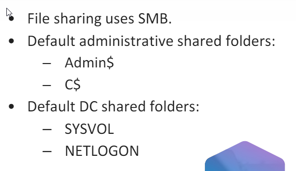

Generally Port 445


-net share - displays mapped, shared netowrk folders
-net share [assigned_share_name]=[share_path] - assigns as name to the new shared network path
- net share sharename /delete- removes a share network path
net use z: \\Machine_name\File_path\share_name persistent:yes- maps a network shared path to an endpoint